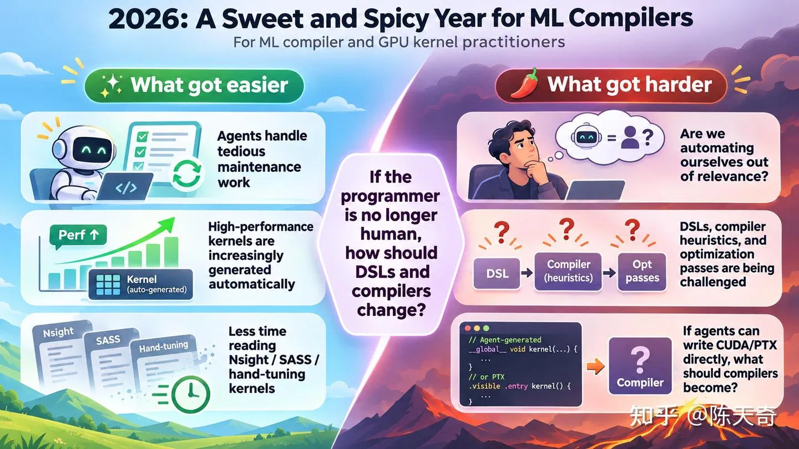
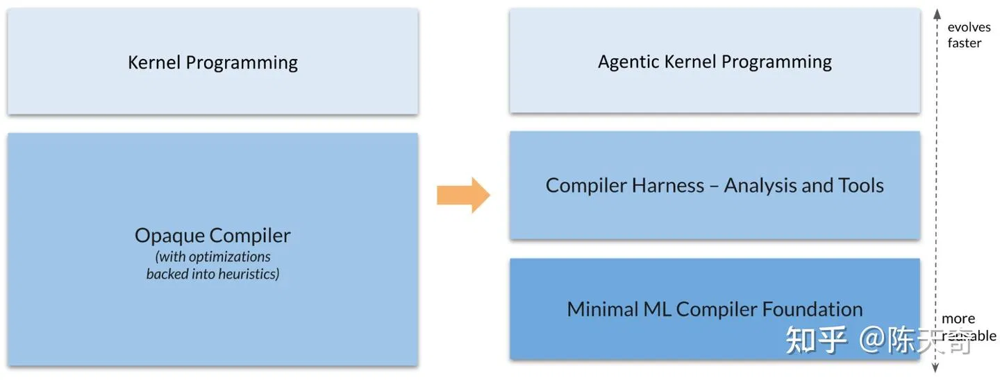
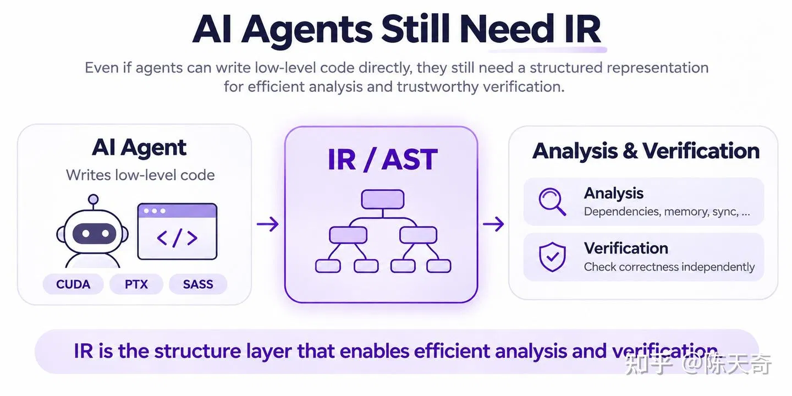
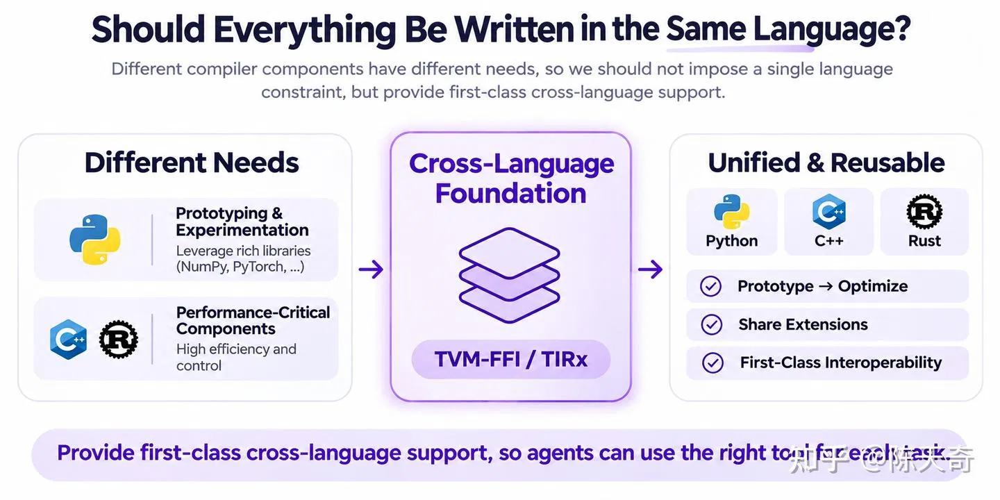
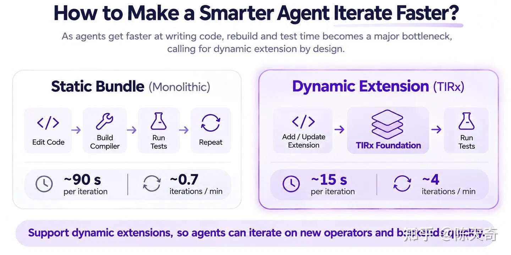
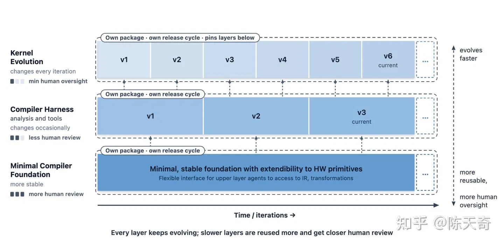
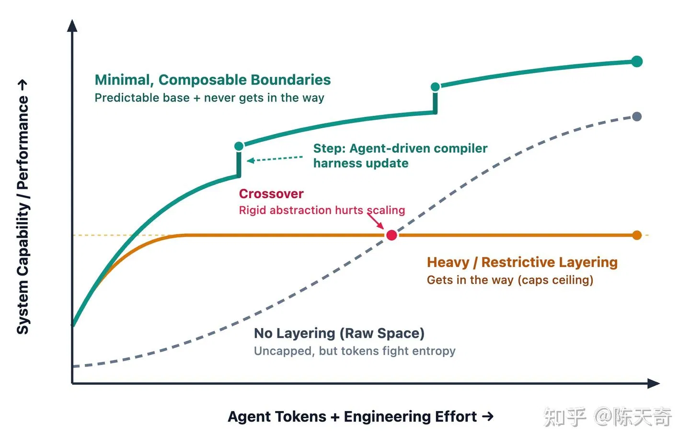

# 序
转载一些重要有趣的文章，侵删。
导读：[陈天奇] CS. PhD 机器学习系统，原文：构建 Agent 时代的机器学习编译器基础层
# 正文
今年是 Agent 元年，不管对于任何的领域，大家都需要感受到这样的变化。对于机器学习编译和 kernel 可能更是如此。传统的机器学习编译尝试利用我们的领域知识从图，tile 和 SIMT 等各个粒度去进行变化和优化，使得我们可以再各个硬件上通过简洁的代码获得很高的效率。强大 agent 的出现使得只要我们有足够多的 token，基本底层的算子和软件都可以都可以蹬出来了。

一方面来看，Agent 已经可以解决从高性能算子的开发到框架优化的各种问题。我们也终于可以从阅读 nsight 报告检查汇编和手动微调 kernel 的循环中解脱出来了。近期包含 KernelAgent, CUDA Agent, Cursor’s multi-agent system, CAKE, TIRx Harness, KDAgent, and EAT 这些工作都在自动化 GPU kernel 开发中取得了令人瞩目的进展。
另一方面，我们也需要直接面临这样一个问题，我们是否在淘汰我们自己。 像 我不得不把才华埋葬在昨天 描述的一样，Agent 开发 kernel 的水平超越人类基本是必然，而 HazyResearch 最近的博客 Retire the Abstractions 也开始质疑是否我们还需要 CUDA DSL。
我们也需要直接面对这样一个问题。当编写程序的主力不再是人类的时候，我们是否还需要编译器。经过探索和实践，我们的答案是编译器本身依然重要，但是必须以不一样的形态出现。
这篇文章介绍了我们对于 Agent 时代机器学习编译器基础层的思考。比较巧合的是，这篇文章的发布节点也差不多是我们上一篇文章一年之后。在去年的这篇文章中，我们介绍了 TVM FFI，以及展望了一个开放，通用，稳定 ABI 和 FFI 标准对于 agent 时代的作用。在 TVM FFI 发布之后，我们也一直在努力地去继续模块化 tvm 核心，经过一年的努力，我们拆分，并且针对 agent 进行从头开始重新设计打磨，最终完成了一个轻量级独立的 TVM-TIRx 模块仓库。它包含以下元素：
- 轻量级的核心 IR 集合 用于 DSL 和编译中的常见需求和快速扩展。
- 稳定的可复用的底层模块 来负责编译过程中比较” 老实 “和可预测的部分，并且剥离高层需要 heuristic 的部分。
- 优先支持动态扩展 扩展 DSL 类型和操作本身可以直接在 off tree 的包里面直接完成，并且直接动态链接 import 基础层。
- Python, Rust, C++ 三语言自由混合驱动 给 agent 足够多的灵活度根据场景选择语言来开发编译器。
- 对接稳定的底层编译工具链 保持足够的灵活度的前提下和底层编译工具链进行对接。

我们认为 agent 时代机器学习编译器必然会从原来的单一，heuristic 和确定性变化混合在黑盒形态变成更加模块化的组合方式，并且给 Agent 提供直接针对 IR 数据结构等内部模块的直接访问，方便 agent 自己开发扩展。我们把其中底层比较稳定轻量级的模块称之为 Agent 时代机器学习编译的基础层（ML Compiler Foundation for the Agentic Era）。也是今天这篇文章要介绍的内容。
这篇文章讲述了我们针对 Agent 时代的机器学习编译系统的思考过程。我们也希望这样第一性原理的思考可以对广大的社区有所帮助。
# 我们还需要编译器吗？
我们需要问自己的第一个问题是我们是不是还真的需要编译器。传统的 DSL 引入和很多抽象可以用于帮助人类来编写操作。但是如果 agent 出 CUDA，PTX 或者会汇编之后，我们或许不一定需要面向人类的接口了。当然从另外一方面看，高级 DSL 本身因为其稳定性和可以快速得到性能依然还是有不少存在的价值，但是我们依然不能低估 agent 本身的能力，agent 直汇编代码在现在这个时间点已经是一个大家普遍可以观察到的现象。

但是我们还是要问这个问题，假设我们直接去掉高层 DSL 抽象接口和代码生成变换，我们还需要编译器基础模块吗？
假设不久的现在或者未来 agent 直接出了底层的汇编并且通过不断地迭代获得了优秀的性能，我们还是不能够直接完全相信 Agent 输出的结果。我们依然需要通过形式化验证等手段来证明，或者通过人类代码审查和自动化检验结合的手段，不论是哪种手段，我们都需要一个结构化 formal 的表示来表示这样的程序。
从另外一方面来说，我们也不希望 agent 花费大量的时间来解决一些低级错误。我们希望可以尽快地帮助 agent 在演化过程中找到错误，并且构建高效的程序分析 来帮助我们分析内存访问，线程同步，数值等各种特性。
我们会发现即使 agent 直接完成了代码的直接生成，我们还是有量大重要的需求：
- 程序分析：虽然 agent 可以直接对着语言文本进行分析，就好像人类可以心算算数但是还是会借助计算器一样，程序表示本身也是 agent 可以借助的工具来进行快速地构建程序分析工具收集迭代反馈。
- 程序验证：程序的正确性本身需要通过严格的检查和验证，而某种结构化的程序表示是到达这一步的必要条件。
所以在这一种未来，我们可能不再需要编译器去编译任何东西，但是我们依然需要编译基础架构来帮助我们分析和验证程序本身。一个相对通用的 IR 可以成为分析，验证和给 agent 构建额外工具的基础层。
基于这种判断，我们至少需要一个轻量级稳定的核心 IR 用于 DSL 和编译中的常见需求和快速扩展。这样的基础层需要足够的灵活度使得不论 agent 尝试生成 CUDA/PTX 或者更加底层的代码的时候，我们都可以通过扩展新 op 的方式来快速支持，而保留大部分核心工具的稳定。并且我们还是需要和成熟的工具链进行灵活对接，特别当成熟工具链已经可以很好解决如 host 代码生成优化等非瓶颈问题的时候，对接成熟的底层编译链可以让我们把 token 花在该花的地方。
# 应该如何设计针对 agent 的编译器基础层
当我们回答完我们是否还需要编译器之后。接下来一个问题就是在 agent 时代的编译器应该有什么不同。Agent 时代的一个核心特征是迭代会异常快速。而当 agent 开始介入编译器开发本身之后，编译器的基础层也要随之发生变化。
是否所有的模块都需要用同一种编程语言？

目前比较成熟的编译器解决方案基本是围绕一门核心语言构建，然后扩展出其它语言的 wrapper。但是当 agent（其实人也有类似的经验）开始开发编译器模块的时候，我们就会根据不同情况来面临不一样的选择
- 一开始 POC 阶段或者我们需要进行快速开发的时候往往 Python 可以直接很快地挫出原型。甚至对于大部分机器学习编译器来说 python 本身就是很好的选择。
- 当我们需要效率或者需要更强的类型检查来给 agent 反馈的时候，Rust 和 C++ 就成为更加自然的选择。
虽然现在只要花足够多的 token，我们完全可以让 agent 直接用某一种语言重新构建整个系统，但是这样蹬出来的东西在可维护（虽然可能是人类挽尊的一种说法）和人可以做的掌控上比起模块化迭代来的会差不少。而这样额外的 token 完全也可以花在其它地方。
所以理想的情况下我们应该让 agent 在模块级别进行程序语言的自由切换。TIRx 以 TVM-FFI 作为基础的 ABI 成我们完成了的 Python，Rust 和 C++ 的三语言自由混合驱动 开发支持。Agent 可以在 python 里面做原型开发，并且快速地把需要的部分在 Rust 或者 C++ 中进实现，并且混合调用任意一个语言中间实现的其它变换和分析的模块。
其中对于 Rust 的支持算是我们一个好玩的尝试，这应该是世界上第一个比较完美支持 Rust 和 C++ 直接混动开发机器学习编译器的尝试。中间也有不少好玩的技术点，包括如何设计 Rust 的原生支持已经动态扩展，我们会在后续文章中进行介绍。
如何让聪明的 Agent 更快地迭代？

Agent 本身可以十分聪明， 但是 agent 本身的迭代速度是受限于我们要开发的代码对象的。开发编译器的同学相信对于编译器项目本身长久的编译时间不会陌生。agent 或者人在每一次进行实现扩展编译器的时候都需要修改大仓库里面的代码，重新编译整个编译器本身，跑测试，然后跪了之后重复整个过程。其中人本身可以通过训练减少这样的迭代，而 agent 基本都是习惯性地去走这样的快速迭代流出。虽然类似于 build cache 这样的东西可以相对减轻这样的负担，我们依然希望开发可以更加轻量化。
所以我们认为 agent 对编译器扩展的开发应该是优先支持动态扩展。当我们针对基础层做扩展的时候我们可以在 off tree 的地方可进行类型和操作等的动态扩展。其中这些动态扩展可以在以 everything as plugin 的方式在独立的 repo 进行迭代。这样直接 agent 在开发的时候可以 pip install 基础层，然后快速迭代需要的部分就好了。
为了可以支持这样的设计， 我们需要仔细地设计相对的基础架构。比如常见的 visitor pattern 需要我们提前知道所有可能的类型节点（这也是为什么 Rust enum 和 LLVM/MLIR 都需要静态编译的原因），而如果我们想要支持可以动态增加类型并且保留常见的如递归访问，改写，和符号表达式约束传递等功能的时候，我们需要一些基于 TVM-FFI 的结构化 API 的设计。有兴趣的同学也可以参考文末附带的文档。在这里需要特别感谢 Tilelang 社区，其中动态扩展支持，独立模块化和符号表达式 Z3 约束等都来自 TileLang 社区对 TIRx 的反馈和支持。
未来我们应该怎么样进行代码维护？
当软件都是蹬出来的之后，我们应该怎么样进行代码维护呢。因为有不同的需求和特化，我们相信 agent 还是需要维护不同的领域相关编译代码。我们也看到如 compiler harness 的需求，去构建以分析而不是变换为主的工具。但是不论怎么样，我们都会面临在快速迭代和代码 slop 化之间的一个矛盾。而且在不同的模块迭代速度和对于 slop 的可以容忍程度是完全不同的。
当我们在进行 kernel 迭代的时候可以每几分钟就出一个 kernel，在最后审核之前可能完全没有人的干预。而如果我们真的希望开发可以复用可靠的代码的化，我们依然需要更多的人工审核（或者在优化架构的前提下投入大量 token 进行 polish）。

这就意味着传统的项目模块必然会随着稳定性和迭代速度的不同需求进行分层。而机器学习编译基础层需要提供的职责就是负责编译中比较轻量，稳定和 “老实” 的部分。也就是一旦需求确定我们不需要特别多针对 heuristic 的调整。并且基础层需要保持足够多的灵活性给 agent 来扩展编译抽象。这样我们可以让 agent 基于基础层进行高层的编译器扩展和 compiler harness 快速的迭代。所以 TIRx 基础层的重点关注在：
- 轻量级的核心 IR 集合 用于 DSL 和编译中的常见需求和快速扩展。
- 稳定的可复用的底层模块 来负责编译过程中比较” 老实 “和可预测的部分，并且剥离高层需要 heuristic 的部分。
- 对接稳定的底层编译工具链 保持足够的灵活度的前提下和底层编译工具链进行对接。
我们的目标并非直接去掉所有的机器编译器功能，而是把其中相对稳定的核心独立并且仔细设计维护，同时让 agent 快速地把 token 用在刀刃上进行上层部分的快速构建。
# 讨论和展望

今年相当于技术的十字路口，所以未来很难预测。这篇文章中所讨论的形态应该也不一定是机器学习编译技术在 Agent 时代唯一可能的形态。但是一点是肯定的， 当我们进入到这个新的时代，原有的抽象和设计都需要被重新审视。
过于限制的抽象会让 agent 的开发遇到上限瓶颈。我们一定不能限制 agent 的上限。而另外一方面，虽然无结构的 token 投入还是可以达到一定的效果，我们认为有结构并且保留灵活可扩展的组合边界可以让 agent 进入更快的开发迭代流程，不论是 kernel， 编译器，或者是整体框架本身。我们希望 TIRx foundation 本身可以提供在这个方向上前进的一个基础设施，并且帮助到机器学习编译和 agent 开发的社区生态本身。
在文章的末尾，我们还是想讨论一下为什么我们要做这件事情。特别是 agent 可以让一切解决方案快速入土的时代。虽然这篇文章描述的未来不一定是唯一的未来和解决方案，但是确是我们相信的未来。一直以来，我们纯粹地觉得机器学习编译器的构建应该更加轻量，快捷和简单，在 agent 时代更是如此，TVM FFI 的模块化是去年我们走出的第一步，而 TVM TIRx 的模块化是我们向着这个方向的又一步。我们希望和广大社区的同学一起，见证和参与这个新的时代。
# 致谢
这个项目其实整合了整个机器学习编译开源社区过的经验，我们特别感谢 TVM，TileLang 还有广大机器学习编译社区的团队对项目的反馈。
# 相关链接
Github 请戳 https://github.com/apache/tvm-tirx
项目文档 Apache TVM TIRx Documentation
我们在项目文档中做的更多详细的背景，设计思想的介绍，也欢迎大家查阅。